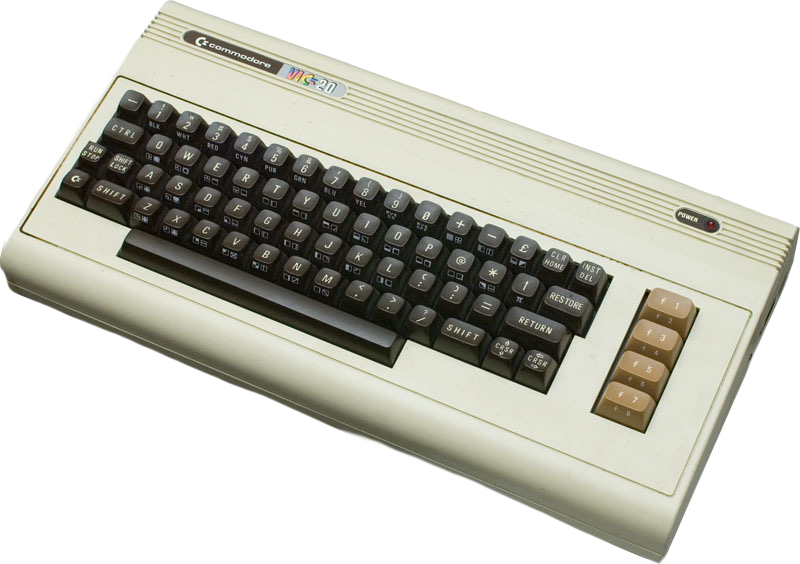

About Me:
Growing Up
I grew up in the south Chicago suburbs as the middle child in a family consisting of my parents and my two brothers. I was always the "nerdy" one in any group of friends I hung out with, often being more interested in books and science than everyone else. I remember "programming" pictures using Turtle Graphics on the family "computer", a Commodor VIC-20 gaming system.